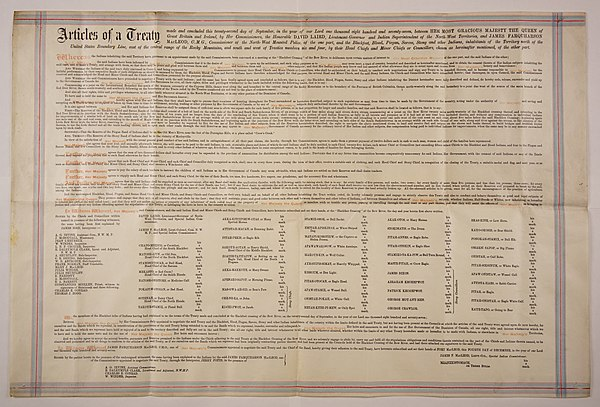
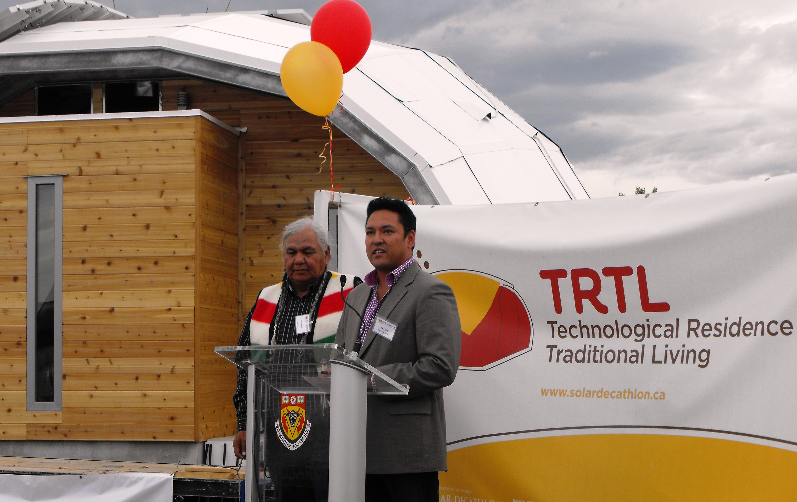

Introduction
This website describes an introduction to the Treaty 7, which the Blackfoot people signed in 1877. It guides you through life before the treaty, what the treaty is and when the treaty was signed, the impact of the treaty, and what life is like now.
Life before Treaty 7
According to the Glenbow Museum, the traditional territory of the Blackfoot Confederacy “extended from Ponokasisahta (Elk River, now called the North Saskatchewan River) south to Otahkoitahtayi (the Yellowstone River).” It goes on to say that the Blackfoot people “lived along the eastern slopes of the Rocky Mountains and eastward beyond Omahskispatsikoyii (the Great Sand Hills in what is now called Saskatchewan).” Because they moved throughout their territory regularly the Blackfoot people knew their land well. They knew where to find what they needed to stay alive throughout every season. According to Sheldon First Rider, Blackfoot elder and Glenbow Educator “all living things equal and have a purpose, right to pass through the cycle of life from birth to death.” The examples he gives include plants that can cure diseases and buffalo giving their Ancestors almost everything needed to survive. The Lives of the Blackfoot People were very closely connected to their traditional land and depended on their ability to travel through it.
What was Treaty 7 and when were they signed
In 1877 the Blackfoot People were one of five First Nations to sign Treaty 7 with the Canadien Government. However, it was not the first Treaty that they signed, in 1855 they signed a treaty with the United States government, which was trying to build a railroad across the continent. The Glenbow Muesum states, “At the time, the government promised to recognize the vast territory of our people.” When the Blackfoot people met with the Canadian Government, the Glenbow Muesum Points out, “they thought they were making an agreement to help one another adjust to a new way of life. They did not understand that the government wanted all rights to the land.” The Treaty was finally signed on what is now the Siksika Nation Reserve on September 22nd, 1877. It is one of the 11 numbered treaties signed between First nations and the crown between 1871 and 1921.
The Impact of the Treaty 7
By the late 1800’s there were so few buffalo on the prairie that the Blackfoot people suffered starvation. When they asked the Canadian Gouvernement for help, they were told to look for buffalo in the United States. In 1880 they were forced to move to the reserved land to start their new way of life there. They had to rely on government rations for food, they needed to farm by hand rather than using the tools available to other farmers at the time, and they had to send their children to residential schools. The treaty did not prevent disease from breaking out. In 1893 many children died from measles. Although these problems began in the late 1800’s they continued throughout much of the 1900’s.
What's life like now
After a long century, the Blackfoot people began to regain control of their lives. According to the Glenbow Muesum “Piikani took control of their education system in 1986”. Later “The Kainai built the Blood Tribe Irrigation Project in 1994 to provide money for their health, education, and welfare projects.” Also, The Blackfoot people have been able to retain a lot of their traditional culture. Many Blackfoot people still farm and ranch, but they also own businesses and extract minerals from their land, which are rich in natural resources. The Canadian encyclopedia says “the confederacy joined other First Nations in signing the Iinii Treaty or Buffalo Treaty. Among other issues, the signatories agreed to unite the political power of Northern Plains Indigenous nations, work towards bison conservation and strengthen traditional relationships to the land.”
